Eze An identity system for value exchange
As Eze prepared to introduce new marketplace features, I identified a foundational gap in its existing identity and initiated a system designed to make global electronics trade feel clear, credible, and recognisable.
- Period
- 2020 to 2021
- Role
- Brand & Product Design Lead
- Focus
- Identity strategy, product language, and rollout
Build the foundation before the product grew
The existing logo could not carry the ambition of a marketplace introducing new features and reaching more customers. I made the case to senior leadership for a practical identity system that could make every product and brand touchpoint feel part of the same business.
Make exchange legible
The mark needed to communicate the two-sided movement at the centre of the marketplace in one recognisable signal.
Build for expansion
The system needed to work as new marketplace features, sales materials, and customer touchpoints came into view.
Create shared standards
The team needed clear rules for product interfaces, partner materials, social profiles, and everyday communication.
An e and z in exchange
The mark brings the letterforms of Eze and the movement of value exchange into one responsive symbol. Two directional forms make buying and selling visible, while the continuous loop gives the marketplace a compact, memorable signal.
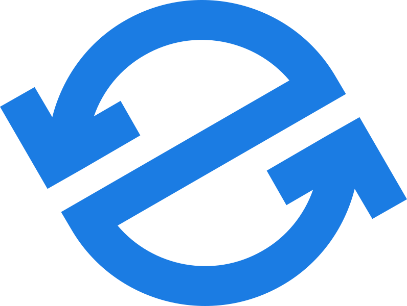
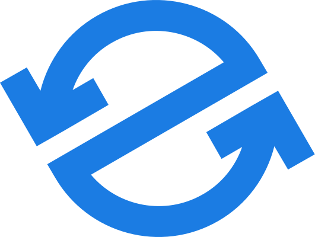
I retained the familiar direction of the earlier logo, then refined it into a mark that could scale from an app tile to a partner lockup without losing its meaning.
- Idea
- Value exchange
- Form
- An ownable e and z
- Use
- Small to large formats
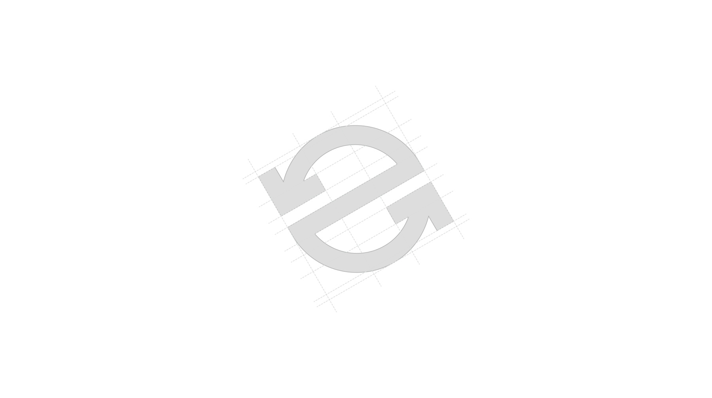
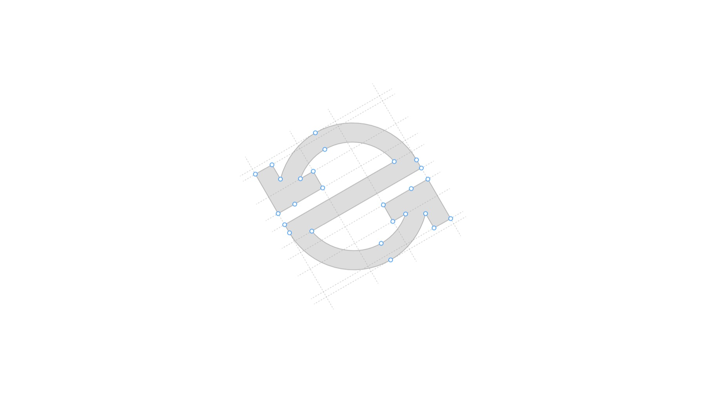
A responsive signature for every context
The final system retained a familiar direction while establishing clear variants for light, dark, and brand-colour applications. That meant the identity stayed recognisable wherever a buyer, seller, or partner encountered Eze.
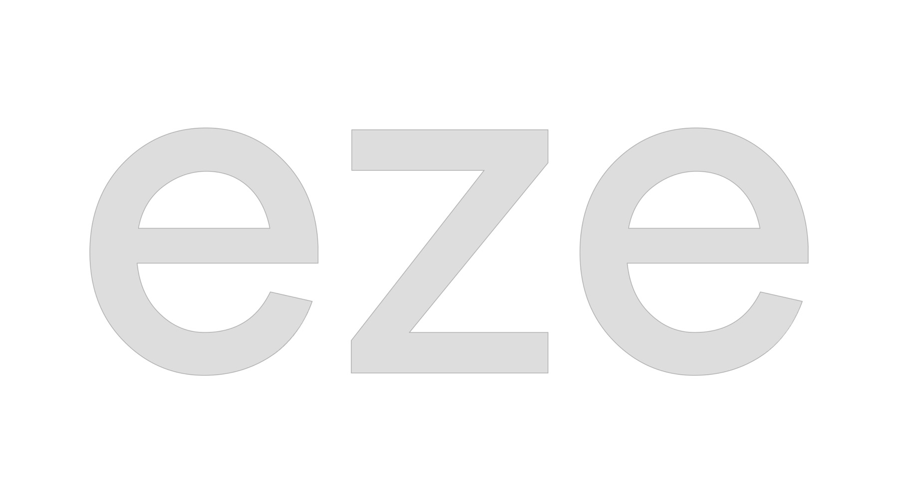
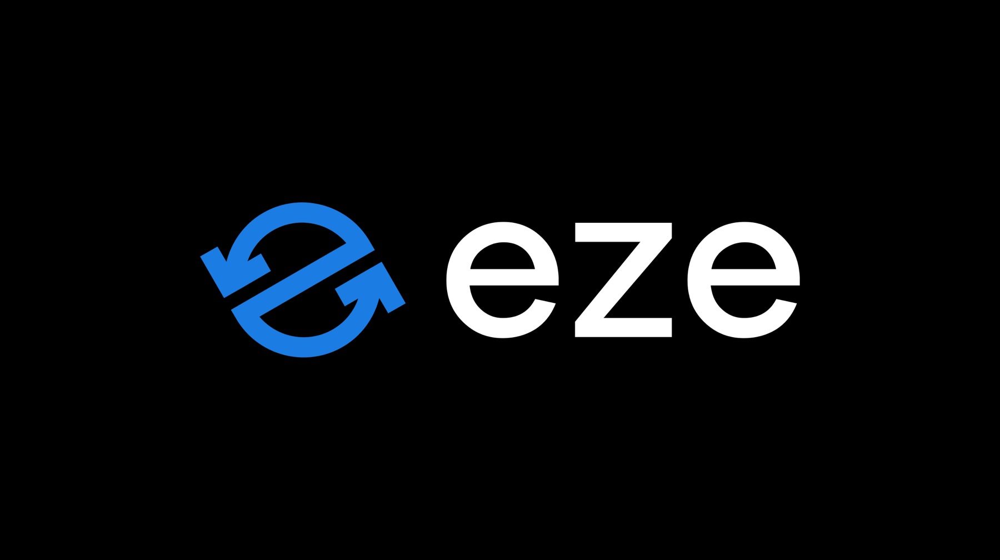
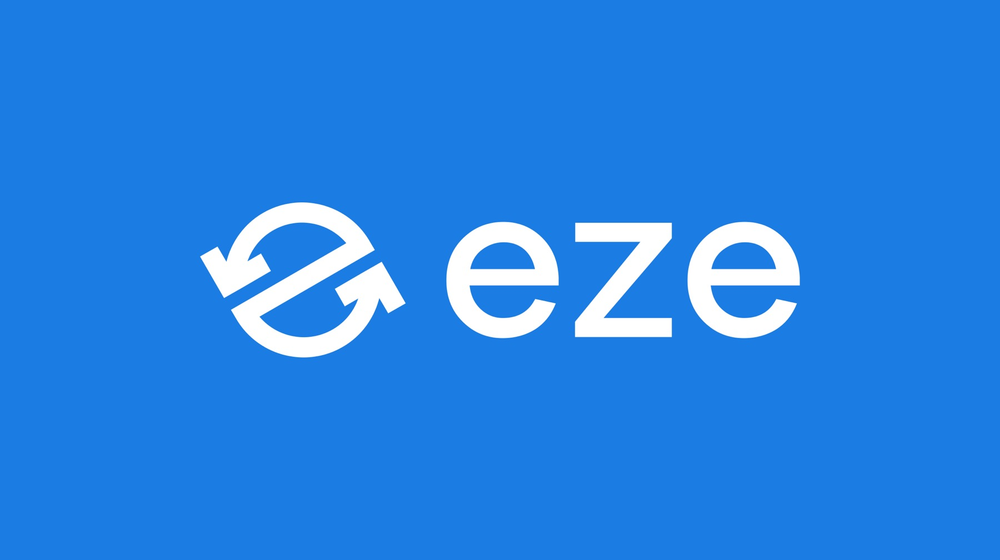
A palette and type system built for clarity
Dodger Blue makes Eze recognisable and active. Anchorfish Blue anchors serious information. Linen softens customer-facing spaces, while black and white make the logo and communication direct. Inter supplied a scalable type system that could hold together across the interface, marketing, and partner materials.
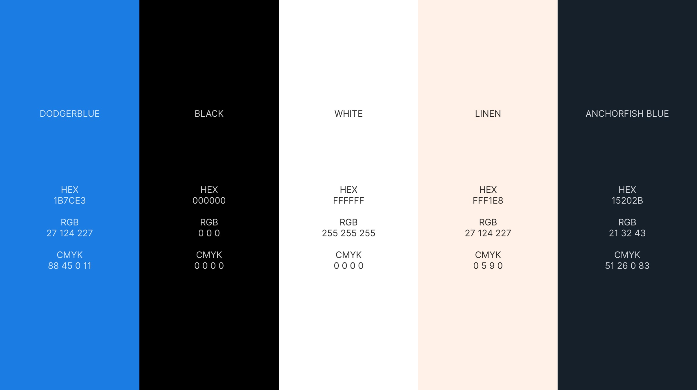
Dodger Blue
The active signal for the brand and its most visible touchpoints.
Anchorfish Blue
A stable foundation for dense information and high-contrast applications.
Linen
A warmer surface that keeps the system open and approachable.
A working identity, not a static mark
Once the direction was approved, I translated it into practical assets for the growing design team and the partners around it. The icon, logo, colour, and layout rules made each business touchpoint feel connected to the same marketplace.
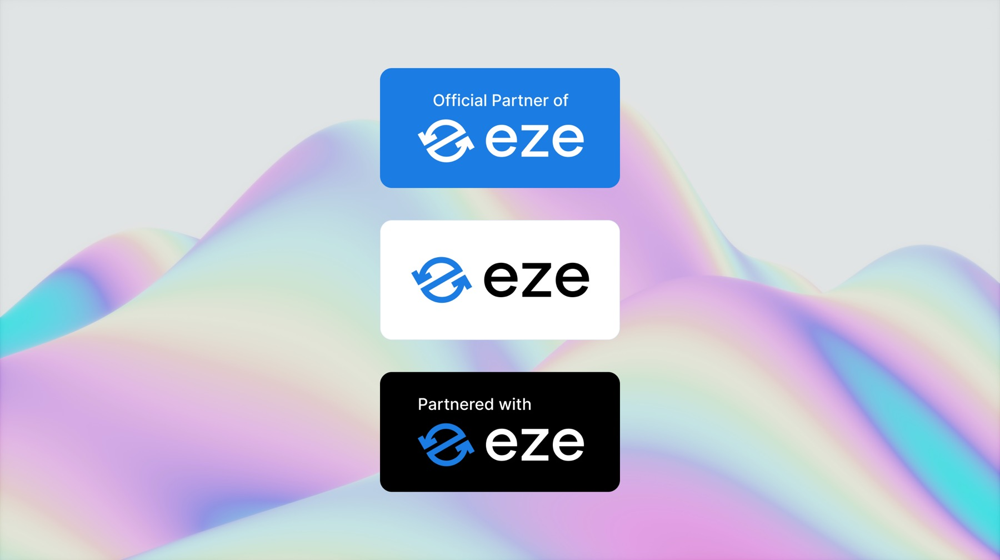
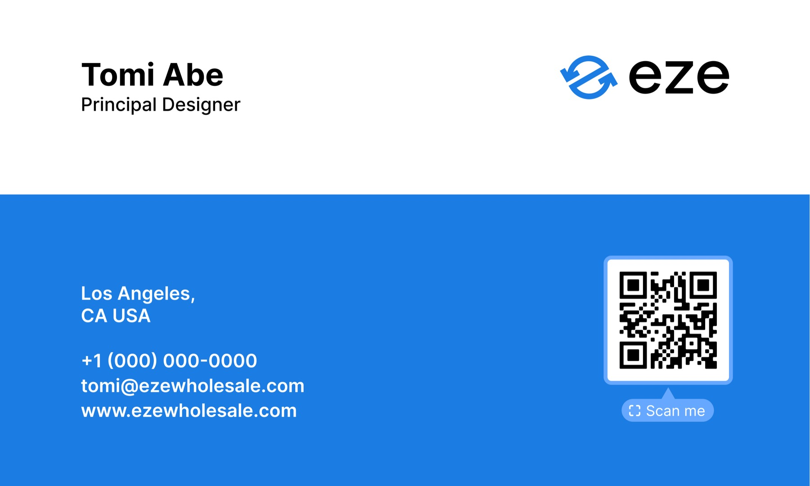
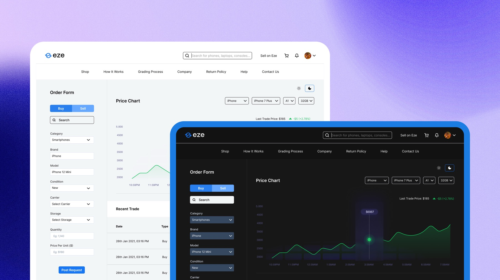
From brand to product
I partnered across product, engineering, sales, and marketing as the system moved into the website, trading platform, and customer communication. That gave practical product surfaces the same visual confidence as the materials around them.
One language across the business
What began as a self-directed initiative became the shared language for Eze's product, partner relationships, and brand communication. The system gave a growing team a practical foundation for making a complex marketplace easier to recognise and trust.